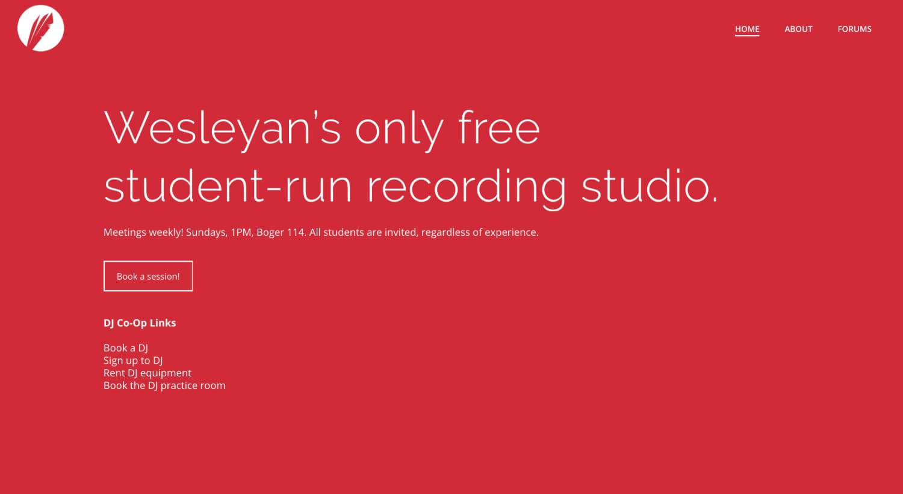
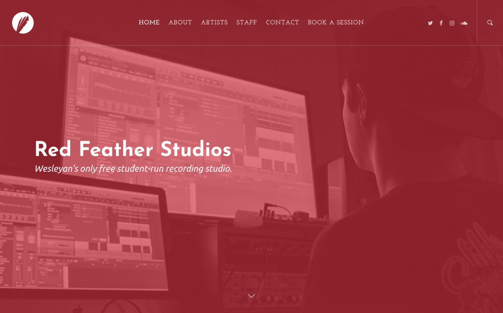
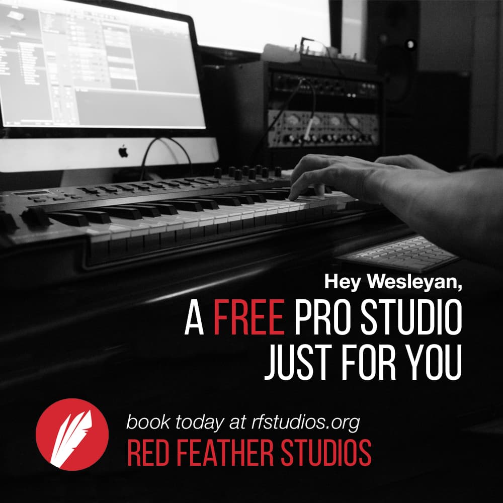
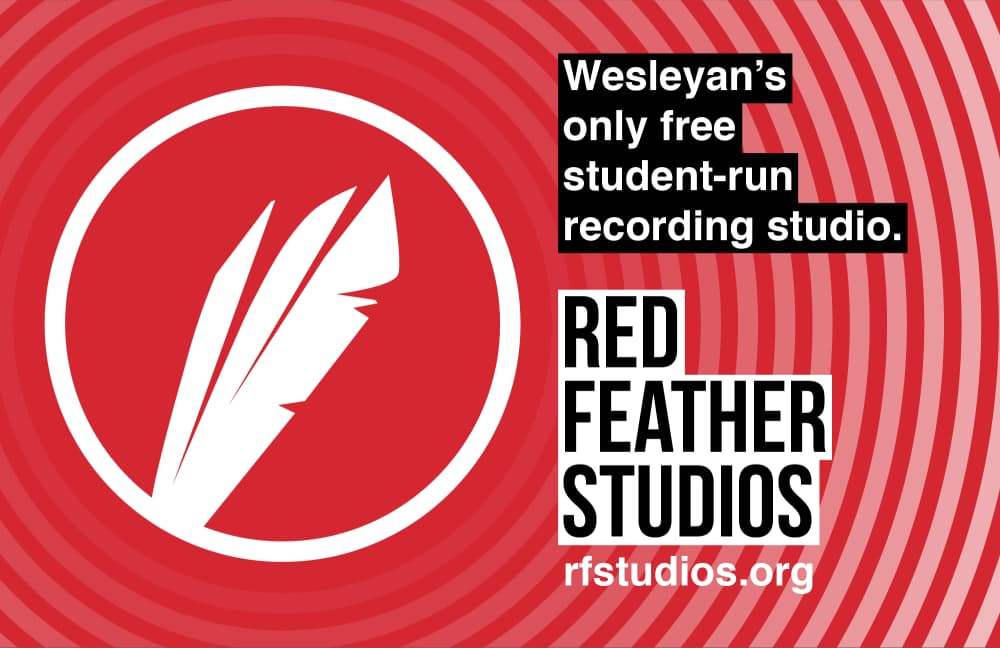
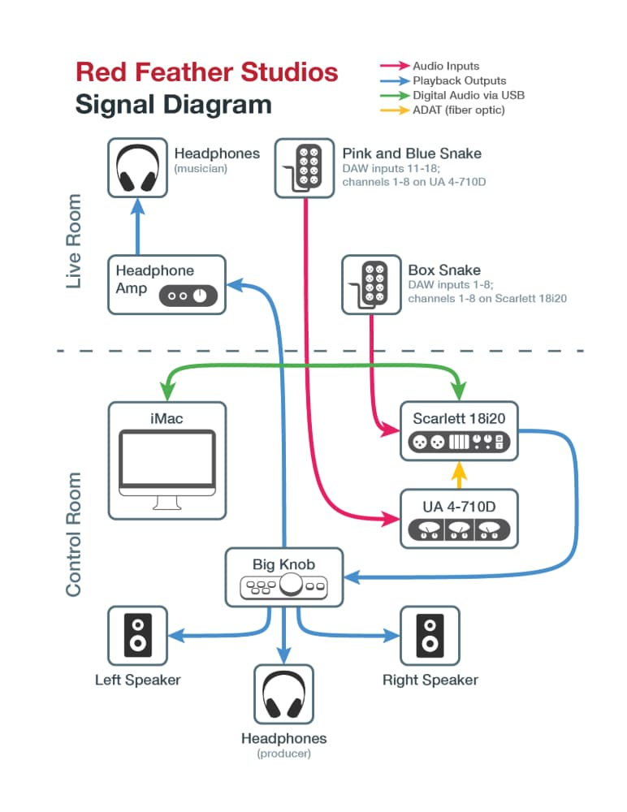

Red Feather Studios is Wesleyan's only free student-run recording studio. The organization accepts bookings from anyone interested in having a recording session, regardless of past experience in a studio. Red Feather's staff meets weekly to schedule each session and assign engineers to each artist, as well as train new engineers and organize other initiatives.
I helped lead Red Feather meetings for several semesters at Wesleyan. My official roles were to organize and distribute weekly bookings as well as manage the website. Nevertheless, I still participated in our special events (like an album made in 24 hours), engineered sessions, and represented the organization through university club fairs and other means.
Fig. 1. The entrance to the studio's live room.
Red Feather was a new organization when I first joined—several founding members hadn't yet graduated and remained in charge of organization affairs. They had a clear mission statement and order of operations, but our general popularity on campus gradually waned as older students graduated and underclassmen weren't aware of the studio's services. Furthermore, the strict initiation process for new engineers proved to be ineffective at attracting new members.
Therefore, we had several problems to tackle. Firstly, the senior staff members would soon graduate leaving no one in charge. Secondly, the studio's audience was dwindling because of a serious lack of advertising. Third, the studio's staff was dwindling because of an inaccessible training procedure.
I was a member of the group that ultimately addressed these issues and assured the organization would continue to function effectively in the upcoming years. We communicated with the graduating head staffers to learn the fundamental administrative components of running the organization, including securing funding and communicating with the school to retain our location. We then split into specialized positions—I offered my background in web and graphic design, as well as administrative technology, to help organize Red Feather's public presence and internal communication.
My first objectives were to set up a sustainable backend for organization communications and design a clear brand identity to better represent ourselves as a long-term organization. I compiled existing documents by archiving pages on the preexisting website and created a Google Drive to internally distribute this data. To facilitate external communications, I created MailChimp templates for promoting weekly meetings and general announcements. Finally, I researched our old logo and created a modified vector version with brighter colors and a better use of space.
Now that we had found some internal stability in our staff and administrative materials, I turned to addressing bookings. Bookings serve as the core function of Red Feather, wherein students book sessions and we then schedule each booking and assign engineers. Unfortunately, our website at the time failed to conveniently instruct users how to book sessions. Even worse, the site's original creators lost access to their WordPress account and we could not make any changes to it.
I tackled these problems by designing a new site using Bootstrap that prominently featured a clear "Book Today!" call-to-action. The button led directly to a booking Google Form, which we could review on a weekly basis. I also simplified the site to one page, as the various pages on the old site were never updated and presented misleading information. I used this one-page design to promote the various ways students could use the studio, as well as make the organization more attractive through CSS animations and clean, legible iconography and photography.
Over time, I would gradually update this site to serve more functions. At one point, I prototyped an online forum for students to collaborate with each other and record together. This project was unpopular with my team and I eventually scrapped it altogether. For my final website iteration, I de-emphasized the booking aspect as we wanted to build a greater community around Red Feather, so I included more pages to promote our recording artists alongside our staff members.

Fig. 4. First update, programmed using Bootstrap (click to view full webpage).
Fig. 5. Second update, simplification and migration to WordPress.
Fig. 6. Final update, merging of previous styles using WordPress.
Because of my experience in graphic design, I created several promotional materials to distribute digitally and across the campus. My first contribution to Red Feather ever was actually a poster that utilized the organization's old logo. Following this design, the group's head staff gave me more freedom to iterate on the logo and come up with new designs. I consequently created marketing assets that incorporated the brighter, cleaner updated branding aesthetic. Furthermore, I targeted specific audiences (e.g. sound engineers, musicians, musical theater composers, etc.) to increase the creative diversity of our active members.

Fig. 7. First poster created for organization using old logo.
Fig. 8. Instagram post advertisement.
Fig. 9. Flagship studio poster.
Besides the organization's administrative backend, my largest non-visual contribution to Red Feather was an extensive instructional manual for our studio engineers to reference. This guide, "The Big Red Book of Sound", was an ongoing project I started with an original head staff member and eventually handed off to one of my peers to continue developing. At the time of my departure from the organization, it spanned over fifty pages and included items ranging from terminology to production techniques, to specifics on our equipment, to diagrams detailing the digital and electrical flow of sound in the studio.

Fig. 10. "Terminology" section excerpt from student manual (click to read pages).
Fig. 11. Studio signal flow diagram.
Like many of the head staffers before me, I had to take leave from the organization because of increasing commitments elsewhere as my time at Wesleyan came to an end. In particular, my thesis in theatrical sound design, No Replica, dominated my last year at Wesleyan. Regardless, all student organizations function under the impression that the current staff is ephemeral. When I left Red Feather, others were eager to take my position and the organization continue to function where I left off. ◼


{kind=link}
{kind=link}
{kind=link}
{kind=link}
{kind=link}
{kind=link}
{kind=link}
{kind=link}